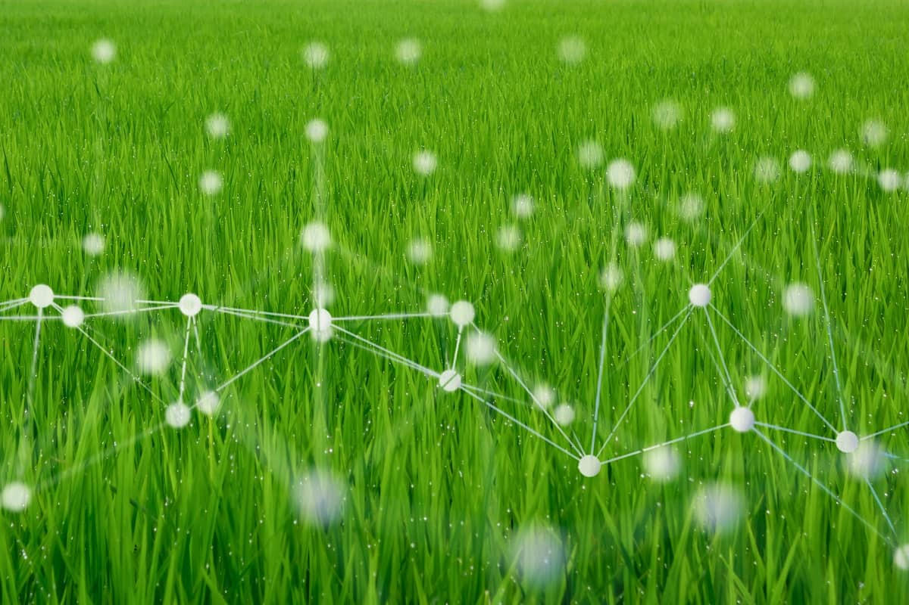

O objetivo principal do ThinkFarm é impulsionar a agricultura sustentável e enfrentar os desafios globais
relacionados à produção de alimentos. Com a necessidade de duplicar a produção até 2050 para alimentar a
crescente população mundial, é fundamental encontrar soluções que aumentem a produtividade agrícola de
maneira sustentável.
O ThinkFarm atua nesse sentido, fornecendo dados precisos sobre umidade e
luminosidade,
permitindo aos agricultores tomar decisões informadas e ajustar suas práticas de manejo de acordo com as
necessidades das plantas. Ao otimizar o uso de recursos, reduzir perdas e melhorar a produtividade, a
solução contribui para garantir a segurança alimentar global e promover a sustentabilidade no setor
agrícola.

Impulsionar a agricultura sustentável: O objetivo principal do ThinkFarm é promover práticas agrícolas
sustentáveis, permitindo aos agricultores cultivar de forma mais eficiente, reduzindo o impacto ambiental e
preservando os recursos naturais.
Aumentar a produtividade agrícola: O ThinkFarm visa aumentar a produtividade nas plantações, fornecendo aos
agricultores informações precisas sobre as condições do solo e da luz. Isso permite tomar decisões
embasadas, otimizando o crescimento das plantas, melhorando a eficiência no uso de recursos e maximizando a
produção agrícola.
Melhorar a qualidade da colheita: Ao monitorar as condições do solo e da luz em tempo real, o ThinkFarm
ajuda os agricultores a ajustar as práticas agrícolas para garantir um crescimento saudável e adequado das
plantas. Isso resulta em uma colheita de melhor qualidade, com produtos mais saborosos, nutritivos e
comercialmente atrativos.
Reduzir o desperdício de recursos: Ao fornecer informações precisas sobre a umidade do solo e a
luminosidade, o ThinkFarm permite uma irrigação precisa e o uso eficiente da água. Além disso, ajuda a
otimizar a iluminação em cultivos em estufas, reduzindo o consumo de energia. Isso contribui para reduzir o
desperdício de recursos naturais e os custos de produção.
Contribuir para a segurança alimentar: Com o objetivo de enfrentar o desafio de alimentar uma população
mundial em crescimento, o ThinkFarm busca maximizar a produção agrícola. Ao aumentar a produtividade e
melhorar a eficiência, a solução contribui para garantir a disponibilidade de alimentos suficientes para
suprir as necessidades da população global.
Promover a sustentabilidade no setor agrícola: O ThinkFarm tem como objetivo promover a sustentabilidade no
setor agrícola, incentivando práticas que preservem o meio ambiente e os recursos naturais. Ao otimizar o
uso de água, energia e outros recursos, contribui para a redução do impacto ambiental e para a criação de
sistemas agrícolas mais equilibrados e resilientes.
Facilitar a tomada de decisões informadas: O ThinkFarm fornece aos agricultores dados em tempo real sobre as
condições do solo e da luz. Isso permite tomar decisões embasadas e estratégicas em relação à irrigação,
iluminação, nutrição e manejo das plantações. A solução ajuda os agricultores a obter melhores resultados,
evitando perdas e maximizando o potencial das culturas.